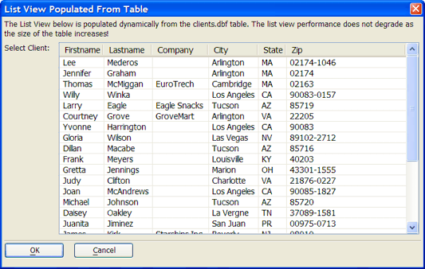

Populate from DBF Table
The designer created this dialog with the List View Genie.

The data displayed in this List View dialog was read from the AlphaSports Customer table.
To select the data for this list view:
In the Data Selection > Populate method list select "Prepopulate from Data Source".
Select "DBF Table" in the Data Selection > Data Source list.
Select the table in the Data Selection > Table name list.
Click
 to select the fields to display in the Data Selection > Field list control.
to select the fields to display in the Data Selection > Field list control.Select the field to return in the Data Selection > field to Return list.
These settings return all records in record order number sequence. The Data Selection > Filter/Where Clause and Data Selection > Order settings could filter and order the records.
See Also
Limitations
Desktop applications only